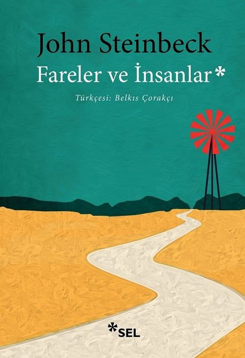
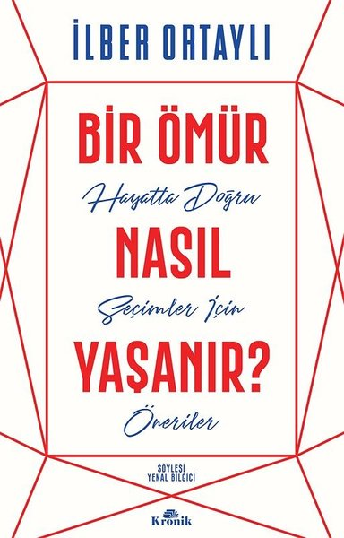

bibliyofil.com
Mutlaka Okunması Gereken Kitaplar
- Franz Kafka-Dönüşüm
- Albert Camus-Yabancı
- F.M.Dostoyevski-Suç ve Ceza

- Samuel Beckett-Godot'yu Beklerken
- George Orwell-1984

- William Golding-Sineklerin Tanrısı

- Gabriel Garcia Marquez-Yüzyıllık Yalnızlık

- Michel de Montaigne-Denemeler

- John Steinbeck-Fareler ve İnsanlar

- Paulo Coelho-Simyacı

Çok Satanlar
- Doğan Cüceloğlu-Var Mısın?
- George Orwell-Hayvan Çiftliği

- Jose Mauro de Vasconcelos-Şeker Portakalı

- İlber Ortaylı-Bir Ömür Nasıl Yaşanır?

- Michael Ende-Momo
En Yeniler
- Hakan Günday-Zamir
- Paulo Coelho-Okçu'nun Yolu
- Kıyamet Park-Bir Kamu Davası 3
- Anne Dufourmantelle-Riske Övgü
- Kevin Wilson-Bir Şey Olduğu Yok